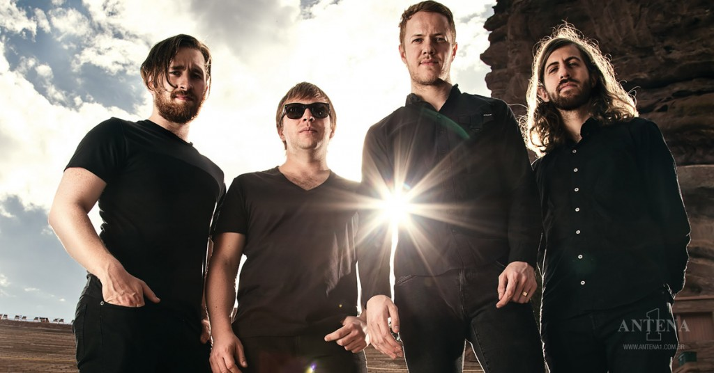

Sobre a banda
A banda Imagine Dragons está na estrada desde 2008 tocando um indie rock. Tudo começou quando Dan Reynolds conheceu o ex-integrante Andrew Tolman em Las Vegas, nos Estados Unidos. Após se conhecerem na universidade, os músicos decidiram, no mesmo ano, lançar um EP que levava o nome do grupo. Hell and Silence EP, chegou às lojas em 2010, ambos foram gravados na Battle Born Studios. Em 2011, lançaram o EP It's Time, e logo depois assinaram um contrato de gravação com a Interscope Records. O nome da banda é um anagrama, segundo explica o guitarrista Wayne Sermon: “Nós tínhamos essa frase, mas não queríamos chamar a banda assim, então concordamos em mudar as letras de lugar e surgiu Imagine Dragons. Nós não dissemos sequer a nossas mães o que era a frase. Como artista você coloca tanto de si mesmo para fora, que é divertido ter alguma que você mantenha em segredo”. A primeira grande aparição aconteceu quando o vocalista da banda Train adoeceu pouco antes do Bite of Las Vegas Festival de 2010 e então o Imagine Dragons foi convidado para preencher o lineup, se apresentando para uma multidão de mais de 26.000 pessoas. Nesta época, venceram várias premiações locais, incluindo “Melhor CD de 2011″ (Las Vegas SEVEN Magazine), “Best local Indie Band 2010″ (Las Vegas Weekly), entre outros que levaram a banda à uma trajetória positiva. O primeiro disco de estúdio da banda, nomeado Night Visions, chegou em setembro de 2012. O álbum alcançou a segunda posição na Billboard 200, com vendas na primeira semana de mais de 83.000 de cópias. Fora isso, também atingiu a primeira posição na Billboard Alternative e Rock Album, e ficou entre as dez melhores posições nas paradas austríacas, canadenses, alemãs, entre outras. Na época, a Billboard listou a banda como uma das "Novas estrelas mais brilhantes de 2012". O grupo saiu em turnê por diversos países, finalizando em 2014 com um show durante o Lollapalooza no Brasil. Foi durante essa série de shows que canções para um segundo álbum começaram a ser escritas. Em outubro de 2014 foi revelado o primeiro single do novo disco, a canção "I Bet My Life". Em seguida, o disco Smoke and Mirrors foi lançado nos nos Estados Unidos no dia 17 de fevereiro de 2015, chegando ao topo das paradas dos mais vendidos por lá e também no Reino Unido. Em de fevereiro de 2017, a banda lançou "Believer" como o primeiro single de seu terceiro álbum. "Believer" foi usado como parte do anúncio do Super Bowl para o Nintendo Switch. Seguindo a divulgação de um novo material, em abril o Imagine Dragons lançou "Thunder" como o segundo single de seu terceiro álbum. Envolve, chegou foi anunciado em maio, juntamente a uma nova faixa, "Whatever It Takes", lançada no mesmo dia. O álbum alcançou o top cinco na maioria dos países, mas recebeu críticas mistas dos críticos. Atualmente, a banda é composta por Dan Reynolds, Ben McKee, Wayne "Wing" Sermon e Dan Platzman.